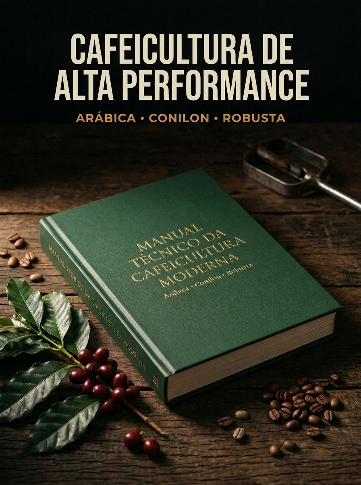

Domine a fisiologia, nutrição, irrigação, podas, fitossanidade e pós-colheita com diferenciação cirúrgica entre Coffea arabica, Conilon e Robusta — e leve sua lavoura ao teto de produtividade e qualidade de bebida.

A maioria dos materiais disponíveis na internet mistura recomendações antigas sem respeitar a genética e a fisiologia de cada espécie.
Aplicar tabelas de Arábica em Conilon ou Robusta acima de 100 sc/ha gera grãos chochos, baixa peneira e colapso de hastes na granação.
Ignorar a autoincompatibilidade gametofítica em C. canephora resulta em florada bonita, mas pegamento pífio de chumbinhos.
Irrigação contínua no inverno causa múltiplas floradas, elevando o percentual de frutos verdes na colheita e destruindo a nota da bebida.
Controlar temperatura na fornalha e esquecer a massa de grãos causa branqueamento precoce e perda imediata de ágio na venda.
Escrito com rigor de engenharia agronômica e foco direto em rentabilidade por hectare.
| Critério Técnico | Guias Genéricos / Conteúdo Gratuito | Manual Técnico da Cafeicultura Moderna |
|---|---|---|
| Espécies e Variedades | Trata Arábica, Conilon e Robusta como se fossem iguais. | Compara Arábica, Conilon (ES/BA) e Robusta (RO) capítulo a capítulo. |
| Correção de Solo e NPK | Receitas prontas de "X gramas por cova" sem análise. | Fórmulas de V%, gessagem em 20–40 cm e extração real por saca. |
| Irrigação e Fertirrigação | Dicas vagas de "regar quando estiver seco". | Cálculo de ETc, tensiometria (kPa), BHC e compatibilidade de tanques A/B. |
| Podas e Condução | Foca apenas em recepa tradicional de Arábica. | Esqueletamento/Safra Zero + PPC completa (hastes/ha no Conilon e Robusta). |
| Pós-Colheita e Bebida | Apenas secagem básica em terreiro. | Via Seca, CD, Fermentação Anaeróbica (pH/°Brix) e protocolos SCA & CQI. |
Cada capítulo inclui tabelas comparativas quantitativas e um Checklist Técnico de Campo com os 5 pontos críticos de auditoria.
Autogamia vs. autoincompatibilidade gametofítica, arranjos clonais, morfologia Conilon vs. Robusta, graus-dia e tabela comparativa completa.
Cultivares e clones por ciclo, estaquia ortotrópica, enxertia contra nematoides (Apoatã), cálculos de calagem/gessagem/fosfatagem e densidades.
Marcha de absorção fenológica, níveis críticos foliares (macro e micronutrientes), apetite de K/N do Canephora e fertirrigação vs. adubação sólida.
Estresse hídrico para florada única, gotejamento vs. microaspersão vs. pivô, cálculo de ETc e leitura prática de tensiômetros a 20 e 40 cm.
Esqueletamento, decote, recepa e Safra Zero no Arábica; PPC e desbrota no Conilon/Robusta; manejo de braquiária com roçadora ecológica.
Broca, bicho-mineiro, cochonilha-da-roseta, ácaros, nematoides, ferrugem, cercosporiose, phoma e tabela exata de Níveis de Dano Econômico (NDE).
Ponto ideal de colheita, métodos mecanizados, Via Seca/Úmida, fermentação induzida, secagem ≤ 40 °C, COB, peneiras e escalas SCA e CQI Fine Robusta.
Ferramentas práticas de cálculo e protocolo incluídas no material sem custo adicional.
Exemplo numérico resolvido passo a passo para calagem (V%), gessagem (m%) e recomendação de N, P₂O₅ e K₂O para meta de 120 sc/ha.
Tabela de parcelamento fenológico (%) e matriz de compatibilidade química (Tanque A vs. Tanque B) para evitar entupimento de gotejadores.
Parâmetros exatos de °Brix, temperatura, pH de corte e inoculação de leveduras para fermentação anaeróbica e submersa.
De R$ 69,99 por apenas